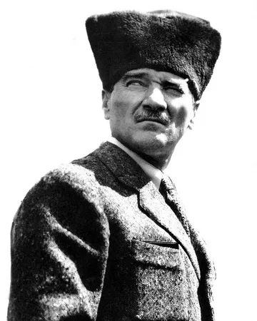
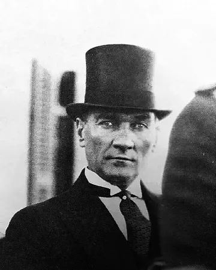
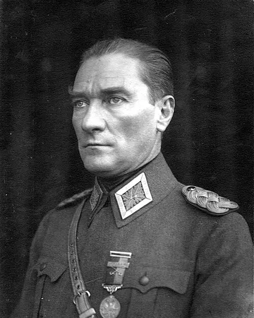
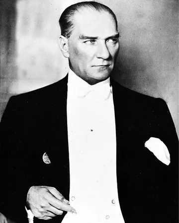

Pamukkale Üniversitesi
Mühendislik Fakültesi
Teşekkür Panosu
Fakültemizin kuruluşuna ve gelişimine katkı sunan kurum ve kişiler. Bir isme dokunarak hikâyesini okuyabilirsiniz.
- Plakalar yükleniyor…
Fakültenin hikâyesi
1970'teki ilk girişimden Pamukkale Üniversitesi'ne kadar.
Mustafa Kemal Atatürk
-

1923 -

1928 -

1930 -

1932
“Hayatta en hakiki mürşit ilimdir.”